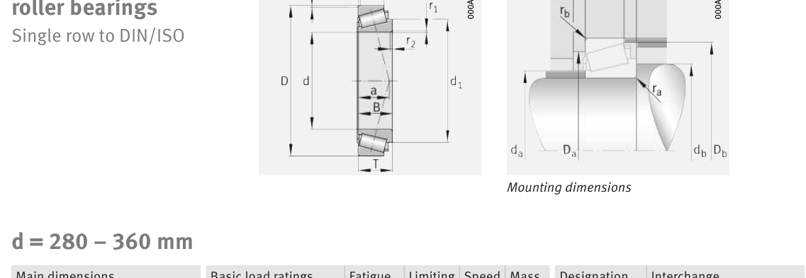

Original catalogue drawing - FAG Schaeffler HR 1, page 612

Scanned from the manufacturer catalogue page listing this part number. All part numbers printed on that table share the same drawing.
Scale cross-section
Blue = inner / outer ring, yellow = rolling element. Drawn to scale from this part's own
dimensions for selection reference only - not a manufacturing or assembly drawing.
Dimension table (mm / inch)
Symbol
Dimension
mm
inch
d
Bore diameter
280
11.0236
D
Outside diameter
580
22.8346
B
Inner-ring / bearing width
175
6.8898
T
Overall assembly width
187
7.3622
C
Cup / outer-ring width
145
5.7087
Notes
Weights are given in kg. Load ratings are shown in both the original catalogue units and the converted value (1 N = 0.2248 lbf). Data is provided for selection reference only - confirm against the latest official catalogue before ordering.
Main dimensions
Bore d (mm)
280
Outside dia. D (mm)
580
Width B (mm)
175
Overall width T (mm)
187
Cup width C (mm)
145
Inner-ring OD d1 (mm)
411.6
Load ratings & speeds
Basic dynamic load rating Cr (lbs)
809312
Basic static load rating Cor (lbs)
1281411
Basic dynamic load rating Cr (N)
3.6e+06
Basic static load rating C0r (N)
5.7e+06
Basic dynamic axial rating Ca (N)
16
Fatigue limit load Cur (N)
530000
Factor e
0.35
Factor Y
1.74
Factor Y0
0.96
Limiting speed nG (rpm)
1,150
Reference speed nB (rpm)
570
Effective load centre a (mm)
132
Weight
Weight (kg)
220.0
Mounting dimensions (fillets / shoulders)
Chamfer r2 min (mm)
7.5
Shaft shoulder da (mm)
335
Shaft shoulder db (mm)
306
Housing shoulder Da (mm)
480
Housing shoulder Db (mm)
540
Housing fillet ra max (mm)
7.5
Fillet rb max (mm)
6
Bearing life (ISO 281 basic rating life)
C / P
Equivalent load P (N)
L10 (106 rev)
L10h at 300 rpm
4
900,000
102
5,644
6
600,000
392
21,805
8
450,000
1,024
56,889
10
360,000
2,154
119,691
15
240,000
8,323
462,415
Basic rating life per ISO 281: L10 = (C/P)10/3 with C = 3,600,000 N. Hours = L10 x 106 / (60n). Life-modification factors for lubrication, contamination and temperature (aISO) are not included.
Source & traceability
Brand
FAG
Source catalogue
FAG / Schaeffler Rolling Bearings HR 1
Catalogue page
p.612 (dimensions)
Load ratings in newtons, fatigue limit load Cur, limiting speed nG and reference speed nB.
Send us the quantity you need and we will come back with price and
lead time, normally within 24 hours. Equivalent parts from other brands can be quoted at the same time.